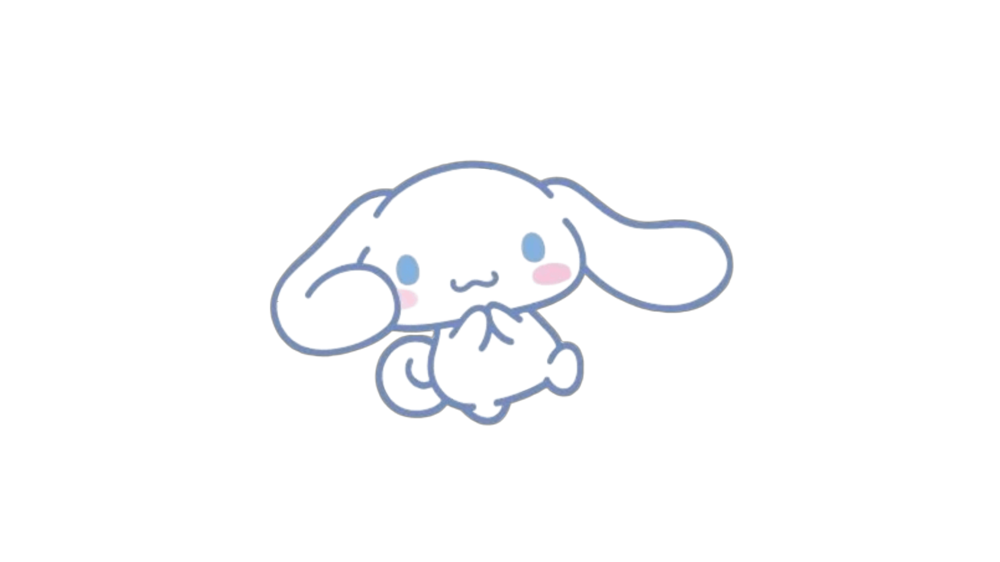

O Kira-Bot é um bot de WhatsApp baseado no Nazuna Bot, criado por Hiudy e distribuído gratuitamente. Ele possui diversos comandos, incluindo funções de administração, brincadeiras, RPG e muito mais.
Ferramentas completas para gerenciar grupos de forma prática e eficiente.
Diversos jogos e brincadeiras para você se divertir com amigos.
Um sistema completo de RPG direto no WhatsApp.
Crie e compartilhe stickers personalizados.